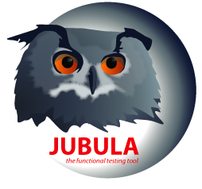

Continuous testing with Jubula
Where the rubber meets the road!
by Markus Tiede
Agenda
What's Jubula?
Why automation & continuous testing?
What's Hudson?
CI scenarios in theory
... and practice
That's Jubula!
UI automation @ eclipse.org/jubula
Jubula features
cross UI-toolkit
SWT/RCP/GEF (e3 & e4) +
Swing + HTML
cross-platform
Windows, Linux & Mac OS X
code-free end-to-end testing
keyword based
& huge library
continuous integration tools
testexec,
autagent, dbtool
Why automate UI tests?
Why not?
manual user interface tests are...
slow
± 2-3 steps/min vs. ± 180 steps/min
expensive
time consuming & recurring
error-prone
boring task
deferred
no regression
Why continuous testing?
multiply the potential of automated task
run
tests as often as possible
prompt feedback
fail fast!
constant quality knowledge
build safety net
nightly regression runs
rope construction material: Hudson
That's Hudson!

continuous integration tool @ eclipse.org/hudson